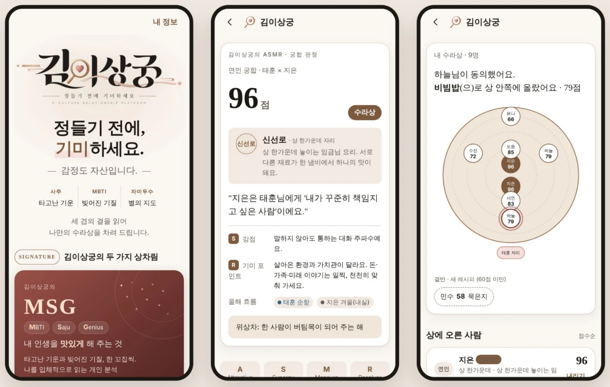

서비스 소개 · MSG와 ASMR
김이상궁은 어떤 서비스인가요?
김이상궁은 맛(MSG)과 소리(ASMR), 두 감각으로 사람과 관계를 읽습니다. MSG(MBTI · Saju · Genius)는 타고난 기운과 빚어진 기질로 나라는 무기를 아는 개인 분석이고, ASMR(Attractive · Saju · MBTI · Relation)은 연인·가족·동료의 궁합을 먼저 맛봐 정들기 전에 감정을 지키는 궁합 엔진입니다. 나·연인·자녀·동료 4개 모드와 심층 리포트 7종을 갖춘 MVP가 이미 작동합니다.
- 개인 분석
- MSG (무료로 시작)
- 궁합 엔진
- ASMR
- 이용 모드
- 4개
- 심층 리포트
- 7종
MSG와 ASMR은 각각 무엇인가요?
MSG
MBTI · Saju · Genius
알기 · 나라는 무기를 안다
내 인생을 맛있게 해 주는 것. 타고난 기운(사주)과 빚어진 기질(MBTI)로 나를 입체적으로 읽는 개인 분석과 MSG 리포트입니다. 김이상궁에 들어오는 첫 문으로, 무료 개인 분석부터 시작합니다.
ASMR
Attractive · Saju · MBTI · Relation
지키기 · 정들기 전에 기미한다
내 인생의 소리를 맛있게 해 주는 것. 연인·가족·동료 궁합 엔진입니다. 김상궁(사주), 별의 지도(자미두수), 이상궁(MBTI) 세 겹의 결을 읽어 한 점수로 보여 줍니다.

MSG로 알고 ASMR로 지킨 다음, 기미의 밤과 수라상 인증 맛집에서 제대로 씁니다. 알기 · 지키기 · 쓰기 활용법 보기
어떤 모드로 쓸 수 있나요?
| 모드 | 무엇을 보나요 | 이어지는 경험 |
|---|---|---|
| 나 | MSG 개인 분석: 타고난 기운과 빚어진 기질 | MSG 리포트, 인생 이퀄라이저 |
| 연인 | 두 사람의 궁합 점수와 수라상 등급 | 기미 초대장, 기미의 밤, 데이트 맛집 |
| 자녀 | 부모와 자녀의 기질 궁합, 가족 궁합 지도 | 가족외식 맛집, 명절·기념일 상 |
| 동료 | 팀 궁합 지도와 팀원별 음식 역할 | 기미 회식(B2B), 회식 맛집 |
주요 기능
심층 리포트 7종
MVP에 포함된 심층 리포트입니다. 창업자는 MSG·부모와 자녀·작명 리포트를 직접 써 왔습니다. 건당 결제로 제공할 계획입니다.
인생 이퀄라이저
대운·세운으로 본 운의 흐름을 음악 스트리밍의 이퀄라이저처럼 시각화합니다.
기미 초대장
궁합을 보고 싶은 사람에게 보내는 초대장입니다. 김이상궁은 이 초대를 통해 사람에서 사람으로 퍼집니다.
내 수라상
궁합을 본 사람들을 점수에 따라 상 한가운데부터 곁반까지 배치해 한눈에 보여 줍니다.
팀·가족 궁합 지도
여러 사람의 궁합을 한 장의 지도로 보고, 각자에게 한 상 위의 음식 역할을 붙입니다.
앞으로 어디까지 가나요?
연인 만남은 입구이고, 목적지는 기질로 고르는 맛집 큐레이션입니다. "나와 같은 기질의 사람들이, 이 상황에서 좋아한 가게"를 추천하는 것이 목표입니다.
| 큐레이션 | 기반 모드 | 내용 |
|---|---|---|
| 데이트맛집 | 연인 모드 | 궁합 등급별 추천, 기념일 재방문 |
| 회식맛집 | 동료 모드 · HR | 팀 음식 역할 기반, 기미 회식 |
| 가족외식 | 가족 모드 | 아이 기질 고려, 명절·기념일 상 |
| 나의 취향 | MSG | 같은 기질 코드의 혼술·여행·쇼핑 |
큐레이션의 재료는 기질 코드(MBTI × 일주), 수라상 인증 가게 네트워크, 기미 테이블 후기 데이터입니다. 확장 단계 계획이며 아직 제공되지 않습니다.
자주 묻는 질문
MSG는 무엇의 약자인가요?
ASMR은 무엇의 약자인가요?
자녀나 직장 동료와의 궁합도 볼 수 있나요?
MSG 개인 분석은 무료인가요?
근거 자료
- 김이상궁 최종 기획서 「런칭과 확장」 (2026), Brand · Product MVP · Expansion 장